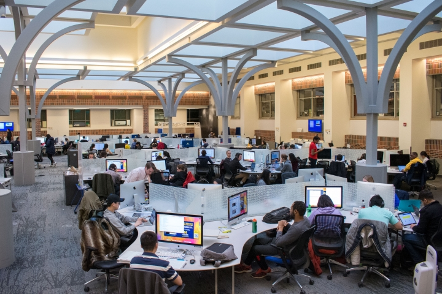
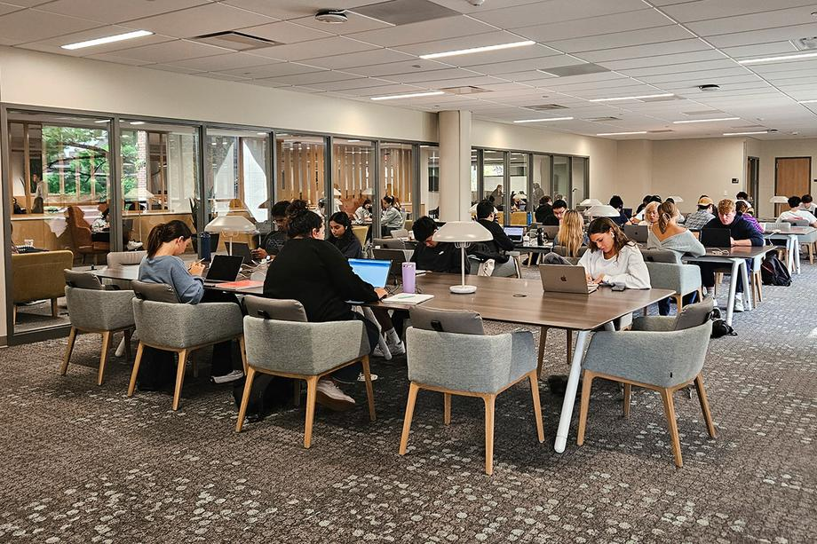
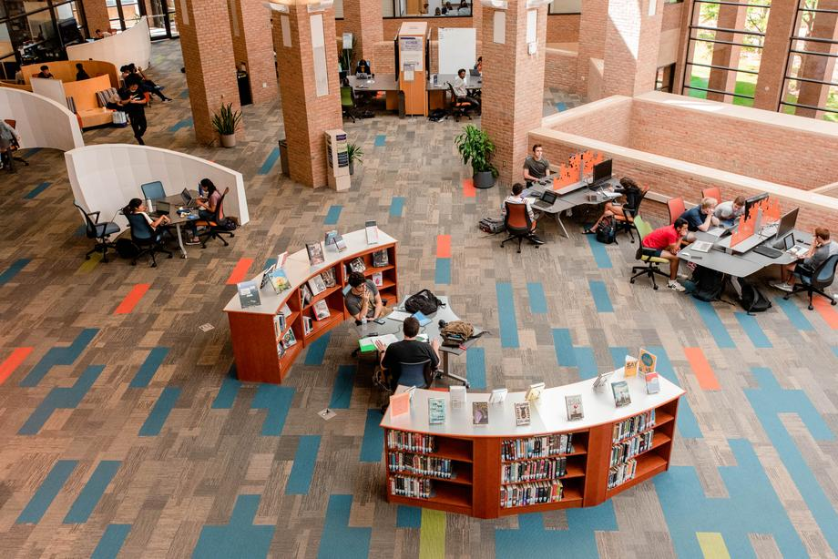
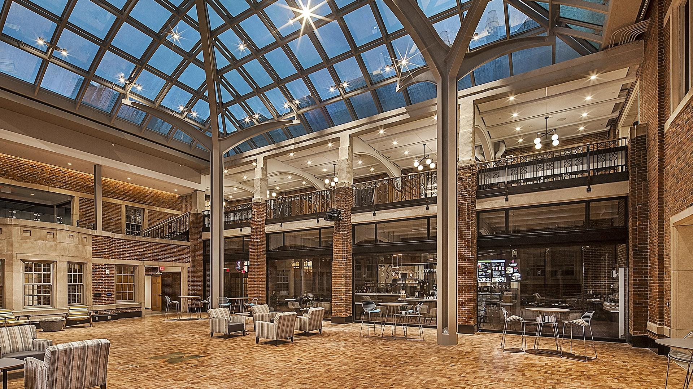

UMSI provides various study spaces tailored for collaboration, focus, and productivity.
Choose a Space That Fits Your Study Style
Need total silence? → Law Library, Hatcher Library
Prefer cafes and comfy chairs? → Michigan Union, Shapiro
Studying in groups? → Duderstadt, Ross breakout rooms
Looking for late hours? → Duderstadt, Shapiro
Angell Hall Courtyard (Fishbowl)
436 S. State St, Room G440 – Mason Hall, Central Campus
The Fishbowl is a bustling study area with long hours and rows of desktop computers. It offers open seating, printing stations, and easy access to Angell Hall classrooms. Best for quick sessions or casual work between classes.

Fishbowl study area filled with computers and open tables
Shapiro Library is a versatile space for group and individual study. It includes quiet zones, collaborative tables, reservable rooms, and Bert’s Café on the first floor. Also houses Ask-A-Librarian support and tech loan services.

Study tables, whiteboards, and collaborative areas at Shapiro
2281 Bonisteel Blvd, Ann Arbor, MI 48109 (North Campus)
Known as “The Dude,” this center offers an interdisciplinary environment with media studios, computer clusters, presentation practice rooms, and reservable group spaces. Open 24/7 during finals. Ideal for tech-intensive projects and team collaboration.

High-tech collaboration zones at the Duderstadt Center
This historic library offers a classic quiet atmosphere, expansive collections, and comfortable carrels for long-term studying. The 2nd and 3rd floors feature individual seating and beautiful views of the Diag. Research assistance and archive access available.
Quiet and traditional reading spaces inside Hatcher Library
The newly renovated Union features modern lounge areas, quiet study spots, cafes, and reservable rooms. Perfect for both solo and group study sessions.

Bright and collaborative seating at the Michigan Union